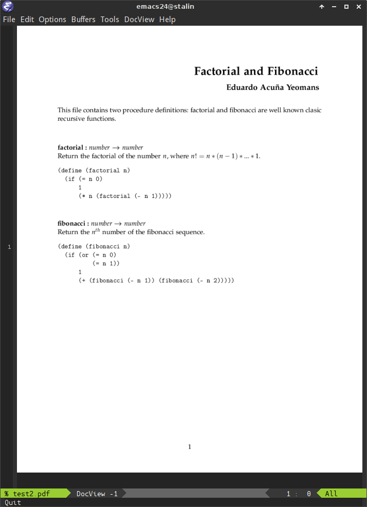

Proyecto Cactus, transforma tu aburrido código fuente en un guapo documento de LaTeX.
Modificando brevemente tu código fuente, puedes obtener un genial documento tanto en LaTeX como en PDF para ser impreso y compartirlo con todos tus amiguitos.
Descripción
Cactus es un programa que transforma un fichero en algún lenguaje de programación en un documento LaTeX el cual puedes imprimir, anexar a algún trabajo o reporte y revisarlo sin un ordenador; es ideal para subrayar, hacer anotaciones, discutir con otras personas y como documento para entregar a tus profesores cuando te dejen una tarea que involucra programar.
¡Enmancipa ese códice de la computadora!
¿Cómo funciona?
Los resultados
Aprecia a Cactus en acción.
 |
 |
Descarga
El código fuente de Cactus se encuentra alojado en Github.
La última versión de Cactus es la 0.1, la cual solo admite códigos fuente escritos en C/C++ y Scheme. La versión 2 está actualmente en su etapa de diseño.
Aporta
Te exhorto a que me ayudes en este proyecto. Corrige el código, arregla bichos raros, propón ideas para la siguiente versión y aporta en hacer que Cactus sea un programa chingón.